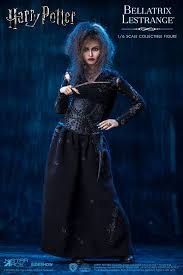
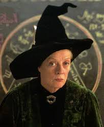
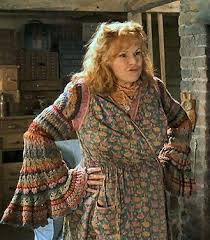
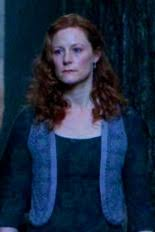
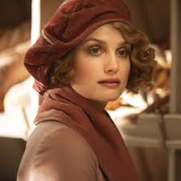
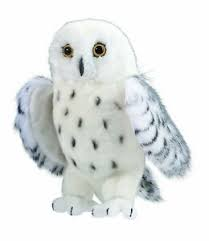
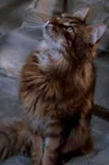

Bellatrix Lestrange, a crazy follower of Voldemort.
Birthday: 1951, Wand: Twelve and three-quarter inches, walnut, dragon heartstring, House: Slytherin, Parents: Cygnus Black III and Druella Black, Skills: She is a duellist of great skill and an experienced Occlumens, Hobbies: Obsessed with her master and blood-purity, intensely happy to torture any that cross her, Death: 2 May 1998.
 Professor Mcgonagall
Head of Gryffindor, and an amazing woman in her own right.
Molly Weasley
Full name: Molly Weasley (née Prewett), House: Gryffindor, Skills: Household spells and healing magic, Hobbies: Cooking for multitudes; listening to Celestina Warbeck.
 Lily Potter, one of the most amazing women in all of the Harry Potter books.
Ful name: Lily Potter (ne Evans), Birthday: 30 January 1960, Wand: Ten and a quarter inches, willow, House: Gryffindor, Patronus: Doe, Death: 31 October 1981.
Tina Goldstein
Full name: Porpentina Goldstein, House: Thunderbird.
Queenie Goldstein is Tina's little sister!
Full name: Queenie Goldstein, House: Pukwudgie, Skills: Legilimency, Hobbies: Cooking.
 Hedwig, Harry's owl.
Ms. Norris, Filch's cat the best animal in the movie!(in Selah's opinion)